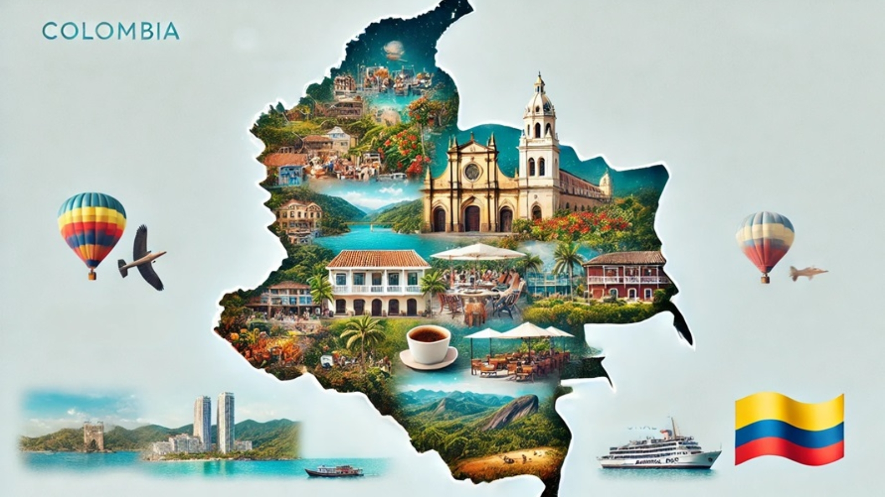

Image credit to emsconsultoresturisticosyhoteleros
Colombian cuisine is the result of a fusion of foods, culinary practices, and traditions from local Indigenous American, European (primarily Spanish), and African cultures. Wikipedia
This a selection of dishes that are very rare and typical in Colombian cousine. If you want to check out more information about it, please watch the channel Mantequiando con Adriana.